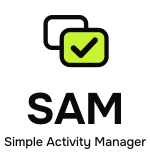

SAM · marca final

icono 512 · maskable con máscara circular · apple-touch · 192 · favicon 32 · favicon.svg 16 · notificación
favicon.svg en tema claro · símbolos como imagen (sin CSS: tinta por defecto negra, lima de respaldo)
